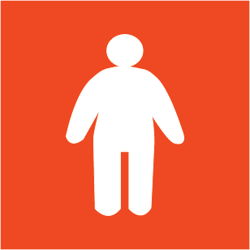
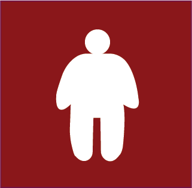

BMI CATEGORIES
The value from the calculation of BMI is used to categorize what status the individual is in, and here are the different categories

Underweight
BMI less than 18.5, indicates being underweight; consult a provider for nutrition advice.
Normal Weight
BMI between 18.5 to 24.9, considered healthy; maintain with a balanced diet and regular exercise.

Overweight
BMI between 25 to 29.9, indicates being overweight; improve diet and increase physical activity.

Obesity
BMI between 30 to 34.9, indicates obesity; seek professional guidance for weight management.

Overobesity
BMI more than 35, indicates severe obesity; needs urgent medical consultation for a plan.